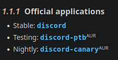
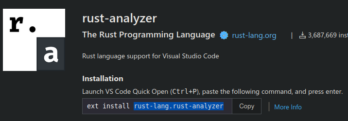
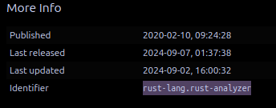
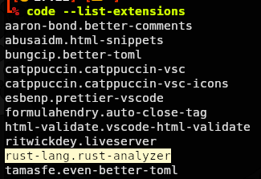

Declarch: A Declarative System Management Tool
Welcome to the Official Wiki for Declarch.
Declarch is a powerful tool designed to simplify system management tasks. Currently it offers two primary functions:
-
File and Directory Management
- Linking: Declarch allows you to create symbolic links (symlinks) between files or directories across your system.
- Copying: You can also use Declarch to copy files or directories to specific locations.
You are provided different directories for which you will store the configuration for your system in /etc/declarch. This is so all the configuration for your system is stored all in one place.
The functionality depends on every Directory Type you place your config in which you will soon learn about in Declarch Directory.
Declarch has safety features in place to protect your data. If a file/directory already exists, then Declarch will not overwrite. After the Declarch command is executed, it will notify you of file/directory conflicts.
Declarch also keeps track of all your files/directories. When they are added, they are added to a database. When they are removed, directories are only removed when empty, files with copying functionality will be removed, and symlinks will be removed.
-
Package Management
Declarch doesn't have it's own package manager, it acts as a wrapper for a number of package managers.
Right now, Declarch primarily focuses on Arch and Debian, but other distros will soon become compatible.
Declarch installs packages in the order of which they are listed in the config file and removes packages when they are removed.
Right now, the available package managers are:
- Pacman
- Apt
- Paru
- Yay
- Flatpak
- Visual Studio Code
- Vscodium
Refer to Package Management for a guide on how to configure.
Declarch will only link/copy and install packages when the declarch command is executed.
Example Config
[paths]
[paths.system]
home = [
[".zshrc", ".zshrc"],
[".themes", ".themes"]
]
other = [
["[drive]Music", "[home]Music"]
]
[paths.special_system]
root = [
["firefox", "/usr/lib/firefox"]
]
[aliases]
"[drive]" = "mnt/SecDrive"
[install]
paru = [
"code",
"flatpak",
"mpd-discord-rpc"
]
flatpak = [
"com.sindresorhus.Caprine"
]
vsc = [
"aaron-bond.better-comments",
"bungcip.better-toml",
"catppuccin.catppuccin-vsc",
"esbenp.prettier-vscode"
]
Installation
Prerequisites
These are the packages you need to install:
On Debian distributions you will need libsqlite3-dev.
Building
After you have installed the necessary packages, you're ready to build:
Clone the repository:
git clone https://github.com/StarlightStargaze/Declarch

Enter the directory:
cd Declarch
Setup the environment:
make setup
Build the binaries:
make build
And finally:
Make sure to run with sudo.
sudo make install
Uninstalling
Uninstalling will not remove the directory located in /etc/declarch.
Just run the following command:
(While located in the cloned directory.)
sudo make uninstall
Declarch Directory
Before we get to the configuring process, you need to know more about how everything works.
After completing the installation process, a new directory is created with a number of subdirectories. Located at /etc/declarch. This is your config directory, which is also the default location of the config file declarch.toml.
Regardless of being located in /etc/declarch, the ownership for every directory has been set to the user running the installation command (your user). Meaning, changes to this directory does not require sudo, and it ensures that there aren't any permission issues when linking files.
The only directories with root permissions are the root subdirectories contained within the system and backup directories.
Why /etc?
The reason the config directory is located in /etc rather than .config for example is because the majority of declarch works through symlinks. If you symlink a major file such as /etc/fstab, no matter whether the source file is located on the same device as the destination file, your system may not boot.
Because of this issue, how the root subdirectories works is it creates hardlinks to the root partitions rather than symlinks, and hardlinks can only be created if the source and destination files are located on the same device. But please do be aware that entire directories can't be hardlinked.
The config directory is only a default, and you are free to place it anywhere that best suits you. Instructions Here
Understanding the Directory Structure
There are three main types of directories:
- Config: config, special_config, secure_config and secure_special_config.
- System: system, special_system, secure_system and secure_special_system.
- Backup: backup and secure_backup.
The System and Backup directories all have subdirectories:
- Home: For linking/copying to the home directory.
- Root: For linking/copying files/directories that require root privilages.
- Other: For linking/copying files/directories to anywhere on your system.
Config
These directories are where you place your config to be linked to .config via symlink.
No configuration is required for these directories, but you will need to know more about their Directory Types.
System Directories
These directories are where you place files/directories to be linked anywhere in your system via symlink.
Declarch will only link these directories when the source and destination are declared inside your config. (Default location:/etc/declarch/declarch.toml).
Backup Directories
The same as System except rather than symlinking, files/directories placed into these directories are copied.
All files within these directories are tracked by their modification time and their destination files are overwritten based on changes made.
Safety mechanisms have been put into place to track the modification times of the destination files. If you edit a file in the destination, execute the update command, declarch will refuse to copy that file until the destination file time is either the same or the file has been moved to the source config directory.
Directory Types
There are four types of directories:
- Normal
- Special
- Secure Normal
- Secure Special
Normal
Also named config or system.
For config, when a directory is placed in this directory. The entire directory is symlinked to .config. No need to add anything to the configuration, just execute the declarch command, and the directories will be linked.
For system, you place your config in either home, root or other. After moving the files/directories into either of the subdirectories, you need to declare it in the configuration, which will be covered in a later section.
Special
Also named special_config, special_system and backup.
Rather than linking the entire directory, when a directory is placed into the subdirectory, the structure of the directory is linked.
The reason this directory type exists is to ensure you only backup the files necessary for you. Since some programs generate a lot of config you may not need to backup.
Example:
Best way to describe this is with an example.
Let's say you want to backup a theme for gnome you made with gtk-3 located in .config/gtk-3.0.
The original file structure of the directory looks like this:
- gtk-3.0
- assets
- close-active.svg
- close-backdrop-active.svg
- etc..
- bookmarks
- colors.css
- gtk.css
- etc..
Let's say you only edited your theme in gtk.css and made a fancy new icon close-active.svg you want to backup.
Since Gnome generates the config on installation, there is no need to backup the entire directory.
So you need to build the structure yourself, moving the files you want to backup to their correct sub-directories.
The structure inside your special_config folder will look like this:
The same applies to special_system and backup. Except rather than placing your config directly in the root of the subdirectory, they must be placed in either home, root or other.
After the structure is built and your files are placed in their correct directories, the structure will look like this:
(bold and red indicates files symlinked)
- gtk-3.0
- assets
- close-active.svg
- close-backdrop-active.svg
- etc..
- bookmarks
- colors.css
- gtk.css
- etc..
Secure Normal
Also named secure_config and secure_system.
The same function as config or system except this directory is for splitting the config containing sensitive information you do not wish to display in your dotfiles publicly.
You can choose to backup this directory in a private repo, or you can exclude it completely with .gitignore.
Usage:
One example of a program requiring sensitive info to be inputted is mpd-discord-rpc. In the config file, it requires you to input a discord bot application ID.
Secure Special
Also named secure_special_config, secure_special_system and secure_backup.
The same function as special_config, special_system and backup, and also allows you to split files containing sensitive information from your config directory
You can use this directory to mix and match with the config you placed in special config.
System Types
Now it's time to cover the system types, you will find out what they do and how to format the paths. There are four system types in total: home, root, other and generic.
Each have an example for how to configure, for a more in-depth approach, refer to Paths
Home
The home system type is made for convenience. If you have a lot of things you would like to link or copy to the home directory, Declarch has your home path defined so there is no need to specify it.
Example usage:
[paths]
[paths.system]
home = [
[".zshrc", ".zshrc"]
]
Root
! Do not use sudo with the declarch command.
! Only use this if you know what you're doing. Only you are responsible for any system breakages.
This directory is where you link (or copy) to the root directory.
The permissions for this directory is set to root and therefore sudo needs to be used when making changes to the directory.
By default, when the config directory is set to its default location (/etc/declarch), Declarch makes a check if the source and destination files/directories are on the same device (partition). If they are, Declarch will hardlink rather than symlink. This is as a safety precaution, because if certain files are symlinked (even when on the same device) for example /etc/fstab, it may result with your system not being able to boot.
If your root directory has a complex structure or you've relocated the Declarch configuration directory, it's strongly recommended to use the backup directories instead of the system directories when working with sensitive files. This will help avoid potential conflicts and ensure system stability.
On Linux systems, you are unable to hardlink an entire directory, so when a directory is entered into the system directory, Declarch creates a symlink to the specified path. When dealing with sensitive files, it is important to either use special_system so the contents of the directories are linked as hardlinks, or backup so the contents of the directories are copied instead.
The full destination path must be specified.
Example usage:
[paths]
[paths.special_system]
root = [
["firefox", "/usr/lib/firefox"]
]
Other
The purpose of this directory is to allow linking/copying to anywhere else other than the root directory or the home directory.
The full destination path must be specified.
[paths]
[paths.backup]
other = [
["Music", "/mnt/SecondaryDrive/Music"]
]
Generic
This directory is made to allow you to link/copy anything you like which is not contained within your declarch directory.
For this system type, you must declare the full path of both the source path and the destination path.
Example usage:
[paths]
[paths.backup]
generic = [
["/home/user/Documents", "/mnt/SecondaryDrive/Documents"]
]
System Configuration
The default location for the configuration file is /etc/declarch/declarch.toml.
You have the freedom to specify the config location with the following command:
declarch -c path/to/toml [Other Options]
Locations
Titled [locations] in the config file.
This is where you can set the default locations of every directory.
This part of the config is optional and there is no requirement to specify the paths. Declarch handles all this for you.
The options are as follows:
| [locations] |
Default |
| config |
/etc/declarch/config |
| special_config |
/etc/declarch/special_config |
| secure_config |
/etc/declarch/secure_config |
| secure_special_config |
/etc/declarch/secure_special_config |
| system |
/etc/declarch/system |
| special_system |
/etc/declarch/special_system |
| secure_system |
/etc/declarch/secure_system |
| secure_special_system |
/etc/declarch/secure_special_system |
| backup |
/etc/declarch/backup |
| secure_backup |
/etc/declarch/secure_backup |
| destination_config |
~/.config |
Example Config:
[locations]
config = "path/to/config"
system = "path/to/system"
Paths
Titled [paths] in the config.
Now it's time to configure the system.
[paths]
[paths.system]
home = [
[".zshrc", ".zshrc"],
[".themes", ".themes"]
]
[paths.special_system]
root = [
["firefox", "/usr/lib/firefox"]
]
Only the system and backup directories are required to be declared in the config file.
First, you must move the files/directories to their specified subdirectory: home, root or other.
After the files/directories have been moved, declarch needs to know the source location of the files, and the destination for where to link/copy the files/directories. This is where you have to declare the paths in the config.
Defining Paths
Let's assume you have zsh installed and you want to back up the .zshrc file. (assuming your .zshrc file is located in the home directory) the best place to move it would be to the directory type system and the system subdirectory home (/etc/declarch/system/home).
Titles
Firstly, you place the system config under the title [paths], then underneath you define the directory type. In this case, you place it under [paths.system].
[paths] and [paths.system] are the only valid syntax in the case of Declarch. [[paths]] is valid toml syntax, but Declarch specifically looks for a table which [paths] is while [[paths]] is a nested array.
System Type
Next, you define the system type, which in this case is home followed by [ ["an", "array"] ] containing the source of the file and the destination of the file which will be covered next.
System types will be covered in the next section.
Source
Assuming you placed the .zshrc file in the root of the system/home directory, you declare the source like so: ".zshrc".
Declarch already has the beginning of the path predefined, so there is no need to type the full path "/etc/declarch/system/home/.zshrc"
You are also able to place the files/directories inside another directory. Let's assume you've done that with .zshrc and let's call the directory "stuff". You must provide the path of where the .zshrc file is located (again, not the full path): "/stuff/.zshrc"
Destination
Let's clear something up first. The home directory works differently to the other system types. In the other system types, you must specify the full path of the destination.
In the case of home, it is not required to provide the full path because the path to your home directory is already defined. Therefore, you only have to specify .zshrc like so: ".zshrc".
The end result will look like this:
[paths]
[paths.system]
home = [
[".zshrc", ".zshrc"]
]
Now let's add another:
Let's assume you have a fancy theme you made for gnome, which is a directory called .themes located in the home directory.
Just simply move it to /etc/declarch/system/home, and following the same schematics as the information above, seperating the two sources with a comma.
Here is the end result:
[paths]
[paths.system]
home = [
[".zshrc", ".zshrc"],
[".themes", ".themes"]
]
Syntax
Declarch has a way of fixing the beginning and end of the paths you specify, so, these paths are valid in the config file:
- "/.zshrc/"
- "/.zshrc"
- ".zshrc"
Paths must also be in the form of a "string".
Execution
And finally, assuming everything is done correctly, it's time to execute the declarch command for the files/directories to be linked.
Running declarch by itself will link and install everything defined in the config.
Running declarch -l will only link config.
You can also choose which directory types to link declarch -l system special_system.
Aliases
Titled [aliases] in your config file.
Declarch allows you to create aliases for convenience. They are implemented so you don't have to keep repetitively typing the same path structure into your config file.
An alias for your home directory comes with Declarch already: [home].
The syntax for defining aliases are as follows:
- "[example]"
- "{example}"
- "(example)"
- "[{(example)}]"
You are able to surround the definitions with as many of the symbols as you want, for example: [[[example]]].
You are also able to mix and match, like so: [{example}].
The same with the system paths, Declarch fixes the beginning and end of the paths defined by the alias. So you can format the path "like/this" or "/like/this/"
Example Config:
[aliases]
"[drive]" = "/mnt/SecondaryDrive"
"{{another}}" = "path/to/another"
[paths]
[paths.backup]
generic = [
["[home]Documents", "[drive]Documents"]
]
As you can see in the example configs above. We defined the alias for "/mnt/SecondaryDrive". When applying the alias to the path in the example use, that path becomes "/mnt/SecondaryDrive/Documents".
Package Management
Declarch currently focuses on Arch Linux package management, but support for additional distributions is planned for future updates.
Beyond Arch, here are some popular package managers that work on a wide variety of Linux distributions:
- Flatpak
- Visual Studio Code
- Vscodium
Instructions
It's very straight forward, all you have to do is list out the packages/extensions in [ "an", "array" ] and then execute the declarch command.
On declarch command execution, Declarch makes a check if that package/extension exists, and then installs the program/extension only if it doesn't exist.
Declarch also tracks the packages/extensions. When a package/extension is added to the configuration, but later removed, the package/extension will be removed from your system.
Package Managers
Here is a list of all the package managers available. You will be given instructions on how to declare packages, and how to find the names of packages to input.
Arch
Declarch provides support for pacman, paru and yay.
You are only able to use one at a time.
If you have paru or yay installed and want to install packages from both the AUR and official repositories, place your packages under either paru or yay.
If you don't have paru or yay installed, or prefer to avoid the AUR, use pacman.
Paru and Yay
Just list the packages in an array by the same package name you use to install with either paru or yay command.
For example, let's say you want to install Discord which is available in the official repositories (named discord) and a package called mpd-discord-rpc which is available in the AUR.
Here is how you format the config:
paru
[install]
paru = [
"discord",
"mpd-discord-rpc"
]
yay
[install]
yay = [
"discord",
"mpd-discord-rpc"
]
Pacman
Same as the above examples, just add the package name as you do when installing packages with pacman.
Self explanatory, but using Pacman means that packages available in the AUR cannot be installed.
Let's add flatpak and gimp:
[install]
pacman = [
"flatpak",
"gimp"
]
Tips
For a quick way to find the package names for the programs you wish to install, just google the package name followed by "arch" (discord arch).
Find the Arch wiki page for the program and it will tell you whether the program is available from the official repos or the AUR.

You can also search for the package in the Official Repository or the AUR Repository.
Debian
Declarch supports installing packages through apt.
Declarch can only install the packages available from your set source repositories and does not provide support for installing .deb files for example.
Currently, for the packages that aren't available in your provided apt repositories, you can use Flatpak instead.
[install]
apt = [
"neofetch",
"mpd"
]
Visual Studio Code
Declarch allows you to declaratively install extensions for Visual Studio Code.
Because Visual Studio Code comes in many abbreviations, you are given an option to choose.
Use only one:
[install]
vsc = [
"esbenp.prettier-vscode",
"rust-lang.rust-analyzer"
]
Tips:
You can find the name for the extension on its Visual Studio Marketplace page:

The name can also be found within its extensions page under "Details" tab on the right of page underneath "More Info".

If you have the extension installed, the extension identifer can also be found by executing the command code --list-extensions in your terminal.

Vscodium
Vscodium has a different repository for extensions to Visual Studio Code so you will find that a lot of extensions available in Visual Studio Code aren't available.
Only the extensions available in the vscodium extension marketplace can be installed, and the extensions unavailable will have to be installed manually by acquring their VSIX.
[install]
vscodium = [
"esbenp.prettier-vscode",
"rust-lang.rust-analyzer"
]
Tips
Follow the tips provided for Visual Studio Code.
Flatpak
[install]
flatpak = [
"com.discordapp.Discord",
"rust-lang.rust-analyzer"
]
Tips
Best way for finding the package identifer is by heading to the Flathub page for the package you wish to install.
Next to the "Install" button, click on the arrow pointing down.